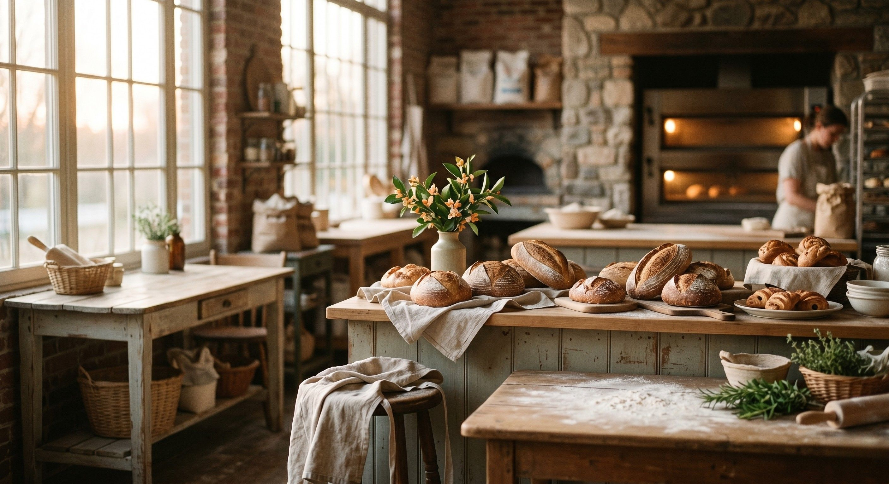

More than just flour
In a world of fast food and processed ingredients, we believe the most profound investment you can make is in the food you bring to your table. Real food isn't just fuel; it is the foundation of your family's health.
True sourdough is a living thing. Unlike store-bought bread that uses commercial yeast to rise in minutes, our dough undergoes a 24-hour slow fermentation. This process is transformative:

Handcrafted with Heart
At Orange Blossom Kitchen & Bakery, we don't have assembly lines. We have a kitchen filled with the aroma of wild yeast and the warmth of a home. Every loaf is shaped by hand, watched over with patience, and baked specifically for you.
When you support a home bakery, you aren't just buying bread—you are choosing a path of quality over quantity, and love over convenience. We bake for your family the same way we bake for ours: with no shortcuts, no preservatives, and a lot of heart.
Return to the Bakery Case